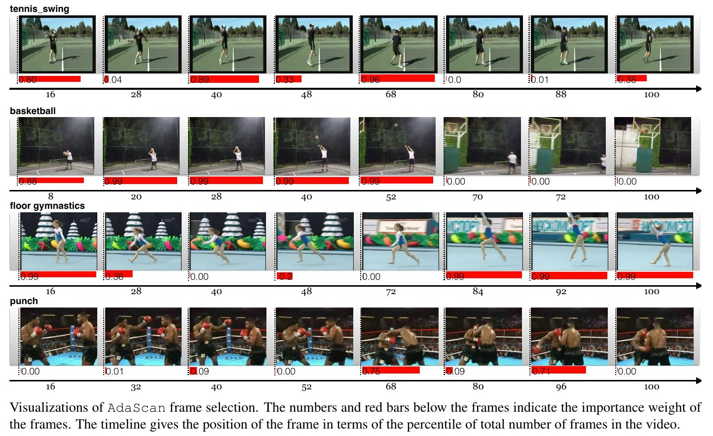
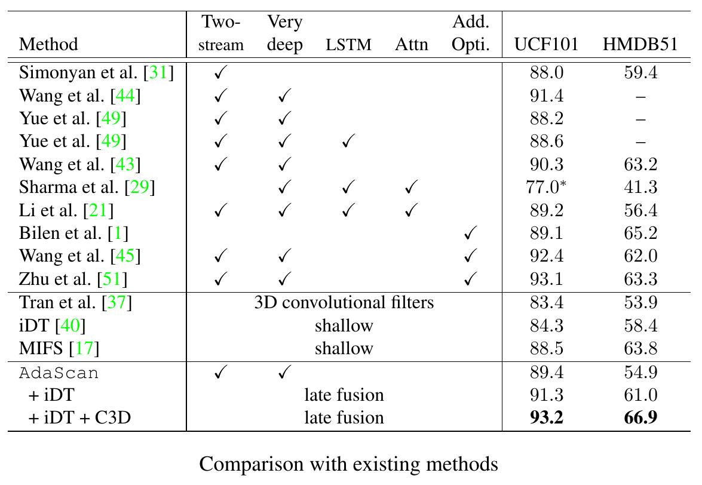
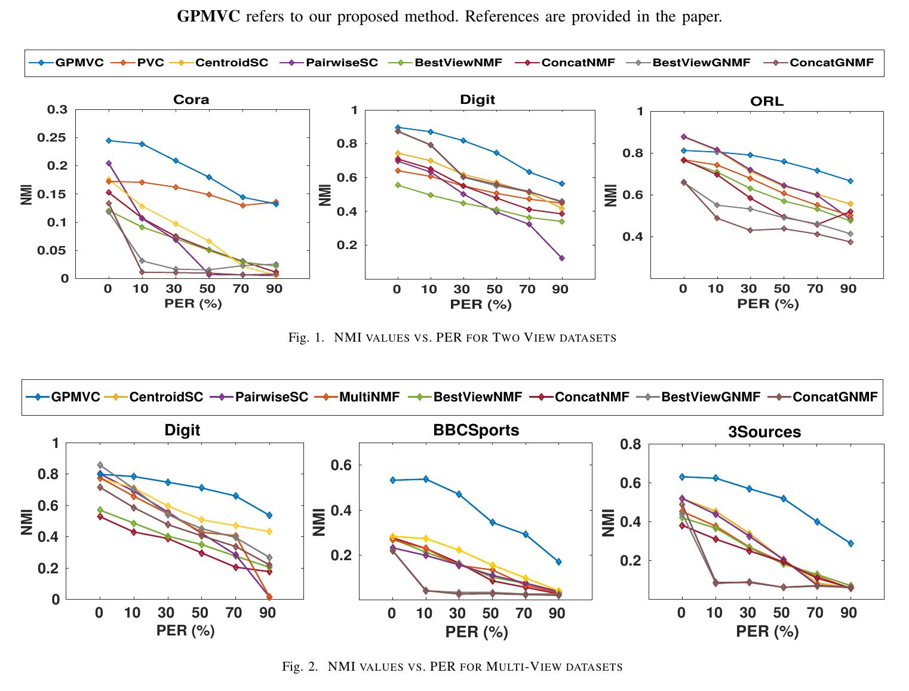

PROJECTS AT A GLANCE


{kind=link}
{kind=link}
{kind=link}
{kind=link}
{kind=link}
{kind=link}
{kind=link}
{kind=link}
{kind=link}
{kind=link}
INTERNSHIPS
University of British Columbia
THE INTERNSHIP
I interned at CARIS Lab, University of British Columbia during summers '16 through the MITACS internship programme. I was mentored by Justin Hart, Post Doc, CARIS Lab and Elizabeth Croft, Head, CARIS Lab, for prediction of single-arm reaching motion by humans in order to create smooth and safe Human-Robot interactions. The internship involved training in ROS (Robot Operating System) working on several robot platforms, including a Barrett WAM 7-DOF Robot and the Willow Garage PR2 Robot.
SINGLE-ARM REACH PREDICTION
The main project I worked on was related to prediction of single arm motion by humans to create smooth human robot interactions, and was mentored by Justing Hart and Elizabeth Croft. It involved studying and analyzing the performance of multiple Hand and Model trackers and the possibility of their inclusion in our pipeline. I also developed multiple interfaces to be used in the experimental setup for the final Human subject experiments.
MERGING POINT CLOUDS
The project aims at merging unaligned point clouds from multiple kinects to gain additional information, and was mentored by Justin Hart, Post Doc, CARIS Lab. It involved a literature survey on existing work for Camera Calibration and Distortion reduction in cameras. Averaging using Rodriguez representation along with Bundle Adjustment was performed to improve the results. A transformation between the Kinects was computed using the extracted camera parameters, which was further used to align the Point Clouds.
Xerox Research Centre India
THE INTERNSHIP
I interned at Xerox Research Centre India, Bangalore during winters '15 (i.e. December '15). I was mentored by Om Deshmukh, Senior Researcher (Area Manager, Multimedia Analytics), XRCI and Sumit Negi, Principal Researcher, XRCI , for developing and evaluating algorithms for Multi View Clustering using Non Negative Matrix factorization. The work involved proposing and evaluating various algorithms for the task. Further details upon completion of the work. The work has been accepted as an Oral presentation at the International Conference on Pattern Recognition '16.
THE PROJECT
The project deals with the problem of clustering data using information present in Multiple Views. We propose several extensions to tackle the Partial Multi View problem which involve data with missing views i.e. not all instances have all views. There has been relatively less work in the field even though it is quite a realistic assumption when we consider real world data. Our proposed models have simple update rules which result in ease of computation. We compare the performance of our approaches with previous models on diverse datasets (including image and textual datasets) and find that our model outperforms them.
THE RESULTS
We compare the performance of our approaches with previous models in the field; our model outperforms the state of the art methods. We use both Image and Textual data to ensure diversity during the experiments. As our approach includes graph regularization, we also study the effect of different kernels on the performance. Additional experiments have been described in the paper.
I.N.R.I.A. Rocquencourt
THE INTERNSHIP
I interned at I.N.R.I.A., Rocquencourt, France during Summers '15 (i.e. May '15 - July '15). I was working simultaneously on two projects during my stay there. I was mentored by Mentored by Laurent Viennot, Senior Researcher, INRIA and Adrian Kosowski, Researcher, INRIA , for finding routes substantially different from the shortest path based on different criteria. The work involved proposing and evaluating various algorithms for the task. I was also working with Adrian Kosowski, Researcher, INRIA for finding good local features which are suitable predictors for global features. Further details for the alternate path project will be available upon completion of the work.
ALTERNATE PATHS
The aim of the project was finding routes substantially different from the shortest path based on different criteria. I implemented various shortest path algorithms and compared their efficiency on real world road networks. It also involved proposing algorithms to compute paths according to another feasible (also proposed) definition. FInally, we created measures to compare different algorithms developed efficient algorithms for the involved computations. Exact plots of the computed alternate paths on various road networks and scores/results will be available soon.
SOCIAL NETWORK ANALYSIS
The project aims at finding good local features which are suitable predictors for global features. I implemented and studied randomized rumor spreading, the relation between size and steps for spread of the rumor. I further explored different local features in graphs based on walks, subgraph densities, centrality measures and their relation with other global properties along with arguments to explain the obtained results. I also collaborated with the ERC (Funded by the European Research Council) World Seastems project during the course of the internship.
PROJECTS
AdaScan: Adaptive Scan Pooling in Deep Convolutional Neural Networks for Human Action Recognition in Videos
Abstract:
We propose a novel method for temporally pooling frames in a video for the task of human action recognition. The method is motivated by the observation that there are only a small number of frames which, together, contain sufficient information to discriminate an action class present in a video, from the rest. The proposed method learns to pool such discriminative and informative frames, while discarding a majority of the non-informative frames in a single temporal scan of the video. Our algorithm does so by continuously predicting the discriminative importance of each video frame and subsequently pooling them in a deep learning framework. We show the effectiveness of our proposed pooling method on standard benchmarks where it consistently improves on baseline pooling methods, with both RGB and optical flow based Convolutional networks. Further, in combination with complementary video representations, we show results that are competitive with respect to the state-of-the-art results on two challenging and publicly available benchmark datasets.
Results:


Relevant Links:
Partial Multi-View Clustering Using Graph Regularized NMF
Abstract:
Real-world datasets consist of data representations (views) from different sources which often provide information complementary to each other. Multi-view learning algorithms aim at exploiting the complementary information present in different views for clustering and classification tasks. Several multi-view clustering methods that aim at partitioning objects into clusters based on multiple representations of the object have been proposed. Almost all of the proposed methods assume that each example appears in all views or at least there is one view containing all examples. In real-world settings this assumption might be too restrictive. Recent work on Partial View Clustering addresses this limitation by proposing a Non-negative Matrix Factorization based approach called PVC. Our work extends the PVC work in two directions. First, the current PVC algorithm is designed specifically for two-view datasets. We extend this algorithm for the k partial-view scenario. Second, we extend our k partial-view algorithm to include view specific graph laplacian regularization. This enables the proposed algorithm to exploit the intrinsic geometry of the data distribution in each view. The proposed method, which is referred to as GPMVC (Graph Regularized Partial Multi-View Clustering), is compared against 7 baseline methods (including PVC) on 5 publicly available text and image datasets. In all settings the proposed GPMVC method outperforms all baselines. For the purpose of reproducibility, we provide access to our code.
Results:

Relevant Links:
Word Embeddings Using Multiple Word Prototypes
THE PROJECT
This was a project for course CS671A: Introduction to Natural Language Processing, under Prof. Amitabha Mukherjee. Since, existing word vector models do not account for polysemy (reducing the quality), the project aimed at improving word vectors by computing individual word vectors for each sense of a word. The project was completed during Aug '15 - Nov '15.
PROJECT DESCRIPTION
The project deals with the problem of construction of Multiple Sense Embeddings for different words. We develop several models to tackle the problem consisting of Online Clustering Methods, Methods involving Parameter Estimation and also look at methods related to Word Word Co-occurrence matrices. Our model is comparable to the state of the art models and even outperforms them in some cases. We also discuss the possibility of our model giving better (semantically coherent) senses than present models. The proposal, poster, slides and the final report are avialable (given in the links below). The code repository is hosted at GitHub.
THE RESULTS
We compare the performance of our approaches with current state of the art models and find that our model is comparable to the state of the art models and even outperforms them in some cases. Our model is extremely efficient and takes less than 6 hours for complete training and computation of senses. The main task used for comparing the models is the SCWS task. The comparisons have been done using human judgment of semantic similarity.
NachOS Operating System
THE PROJECT
This was a project for course CS330A: Operating Systems, under Prof. Mainak Chaudhuri. The project involved extending the NachOS operating system to perform basic operating system functions including Fork, Join, Sleep and Exec. The project was completed during the semester (Aug '15 - Nov '15).
PROJECT DESCRIPTION
The project involved extending the NachOS operating system to perform basic operating system functions including Fork, Join, Sleep and Exec. Implemented and evaluated performance of various algorithms for scheduling processes. Developed and added support for Demand Paging, Shared Memory, Condition Variables and Semaphores.
Geometric Data Structures
THE PROJECT
This was a project for Advanced Track in course CS210: Data Structures and Algorithms, under Prof. Surendar Baswana. The project involved Project involved re-invention of several geometric data structures to efficiently answer specified queries. Some of the involved topics were Convex Hulls, Dynamic hulls, Fractional Cascading, Simplex query. The project was completed during the semester alongside the course (Sep '14 - Nov '14).
PROJECT DESCRIPTION
The project involved re-invention of several geometric data structures to efficiently answer specified queries. The queries handled were Point in Polygon, Polygon-Line intersection, Simplex problem, Orthogonal Range Search and Half Plane problem. We also re invented solutions for problems such as Improving time complexity of Orthogonal Range Search using Fractional Cascading and Dynamic Convex Hulls.
QUERIES HANDLED
The operation handled were Computation of Convex Hull, Point in Polygon, Maintaining dynamic Convex hull, Line polygon intersection, Half plane query : Number of points on a given side of a line (Using convex hulls), Fractional Cascading : Improvement in Half Plane Query, Orthognal Range search : Number of points in a rectangle, Half Plane query : Using Ham sandwich cuts, Simplex problem
MultiModal Emotion Recognition
THE PROJECT
This was a project in the Summer Camp organized by SnT Council in '14. It was completed in the summers under the Programming Club. The project aims at performing emotion recognition using multiple features i.e. text, visual and acoustic features. We then use ensemble methods on the classifiers formed to get improved results (To consider multiple aspects).
PROJECT DESCRIPTION
This project presents a multimodal emotion recognition model which aims at acheiving higher accuracies than the present ones using all the prevalent features in a video, namely text, audio, video. We are classifying the videos into neutral and the 6 basic Ekman emotions [1]. We have decided to use three independent classifiers, one each for text, audio and video. The text classifier gives positive-negative scores showing the extent to which a given statement is positive or negative.
THE RESULTS
I'll briefly describe the recognition rates of the different classifiers. Our model consisted of three independent classifiers which were merged later. For the text classifier, the accuracy was roughly 74% for all of them, with the Naive Bayes model performing slightly better. The Image classifier used many different approaches. The best accuracy achieved was around 65%. The audio classifier uses Mel frequency cepstrum coefficients as features after a bit of pre and post processing. Support Vector Machines and K Nearest Neigbors are used, the best accuracy acheived was 60%. The result improves when the results of all three are considered together.
News Report Classification
THE PROJECT
This was a project taken in the Second semester (Of First Year) under ACA (Association of Computing Activities). This was my first project related to Machine Learning, and introduced me to the wonderful world of ML. The project aims at classifying new reports into multiple categories. We use basic concepts related to Natural Langauge Proccesing and try a few models to compare their performance.
PROJECT DESCRIPTION
The project aims at classifying news articles into various categories. We trained a Naive Bayes Classifier after processing the article text (Tokenisation, Stemming, removing Stopwords, etc) on scraped news data. We implemented K Nearest Neighbors and automated scraping of online news articles for collection of Training data. We also used NLTK (Library) and The Reuters News dataset as validation sets.